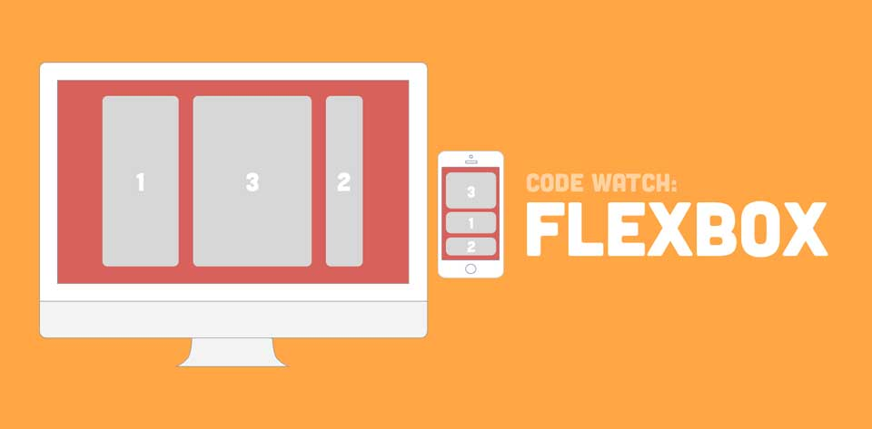
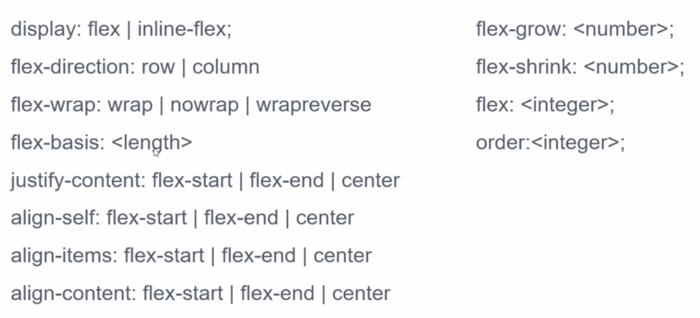

Dạo gần đây mình đi phỏng vấn, chỗ nào cũng hỏi về khái niệm Flexbox trong CSS để dựng layout. Sẵn tiện tìm hiểu nên mình viết lại tutorial luôn.
Có một lời khuyên của người đi trước để lại rằng: "Căn đều một bên thì xài Flexbox, còn hai bên thì xài Grid". Grid ở đây chính là Grid layout theo số cột, thường là 12 hoặc 16 cột.
Flexbox ở đây, có nghĩa là element cha có thuộc tính display: flex, các element con sẽ dựa vào đó mà sắp xếp bố cục linh động. Có thể flex ở đây mang nghĩa flexible. Vào năm 2013, tớ đã biết khái niệm này và dùng trong việc biến nội dung của thẻ <ul> từ chiều dọc thành chiều ngang trên Navbar. Thật ra, Flexbox còn nhiều công dụng nữa, chúng ta cùng tìm hiểu. Lưu ý là các bạn nhớ thường xuyên sử dụng chức năng Inspect Element của trình duyệt để tìm hiểu nhé.

Flexbox được căn chỉnh theo 2 chiều là dọc và ngang thông qua thuộc tính flex-direction.
<ul style="display: flex; flex-direction: column;"></ul>
<ul style="display: flex; flex-direction: row;"></ul>
Giờ ta sẽ đi chi tiết về thuôc tính của element được bọc bởi element cha có thuộc tính display: flex. Đầu tiên, ta sẽ thử thuộc tính flex-grow. Lưu ý, tổng của flex-grow là 10 nhé.
Giờ một thuộc tính tiếp theo là order để sắp xếp thứ tự của flex item.

Thuộc tính align-items để căn chỉnh theo chiều dọc của flex item.
Thuộc tính justify-content để căn chỉnh 2 bên tính từ biên của flex item.

Nãy giờ là demo để mọi người hình dung được Flexbox là thế nào. Giờ mình sẽ note lại đầy đủ thuộc tính của em nó.
